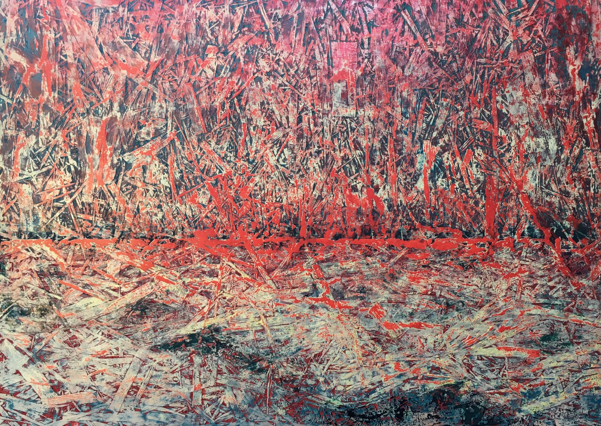
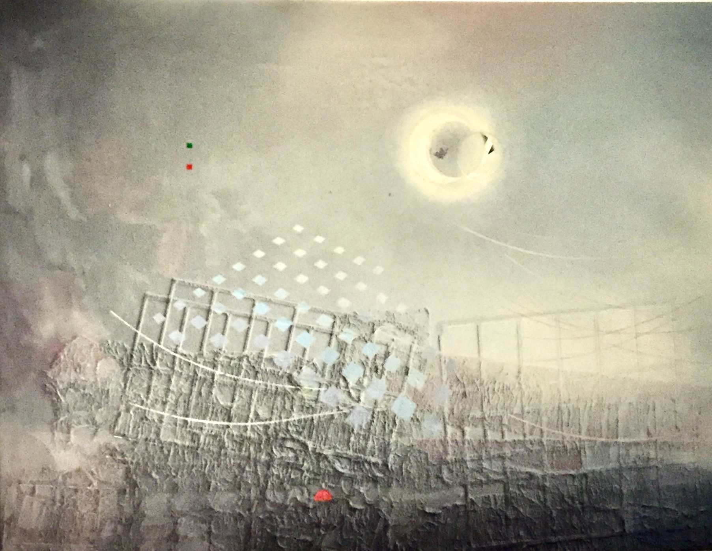
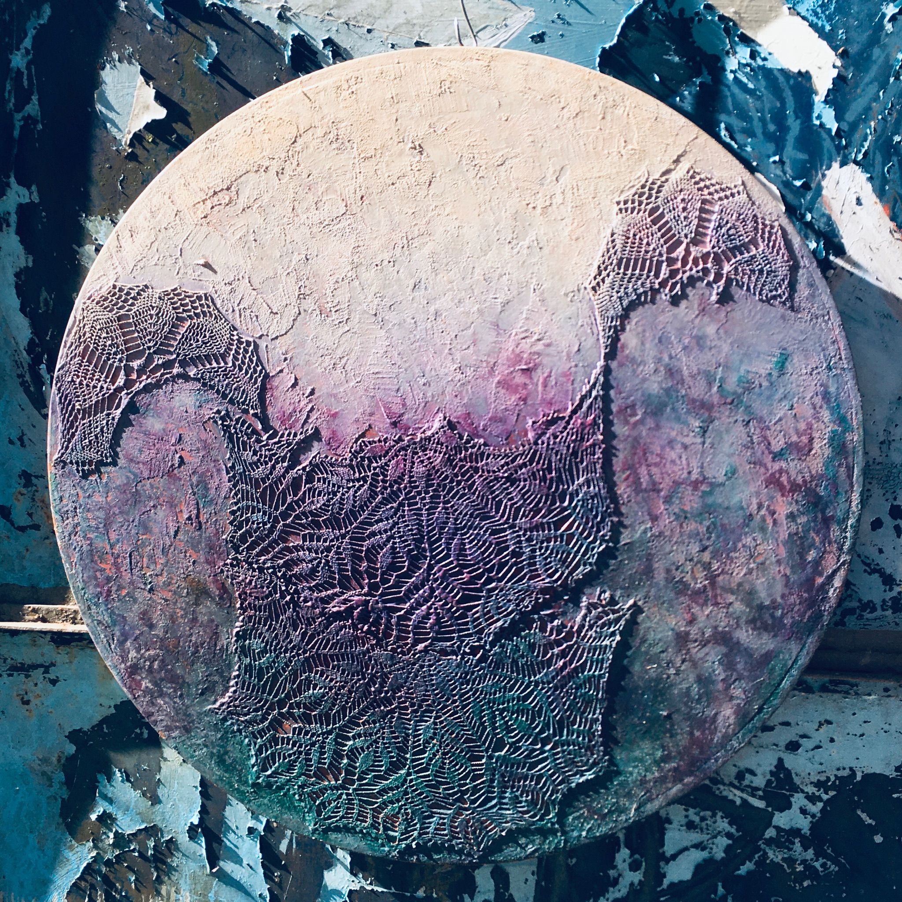

01Dune di materia
Rilievi desertici e segni mossi dal vento.
Entra nel paesaggio ↗Mondi da attraversare, immaginati a partire dai colori, dalle forme e dalla materia delle opere di Gigi Montico.
Un piccolo pianeta nato dalla Luna e attraversato da molti dipinti e materiali di Montico. Sedici territori si incontrano lungo un viaggio continuo: circa due minuti per fare il giro del mondo.
Esplora il pianeta →Un viaggio a matriosca: dal quadro allo spazio, da un altro quadro a una scultura, fino alla materia che si separa e si ricompone.
Inizia il viaggio →Tre interpretazioni dello stesso dipinto, create a partire da modelli 3D di dune, di un’arena e di un suolo lunare immaginato. Il vento e piccoli frammenti portano movimento nei paesaggi.

01Griglie sospese e luce diffusa.
Entra nello spazio ↗Una successione di quinte e aperture.
Entra nello spazio ↗Un paesaggio di segni e frammenti.
Entra nello spazio ↗Strutture, tracce e superfici industriali.
Entra nello spazio ↗
05Cerchi, passaggi e superfici sospese.
Entra nello spazio ↗